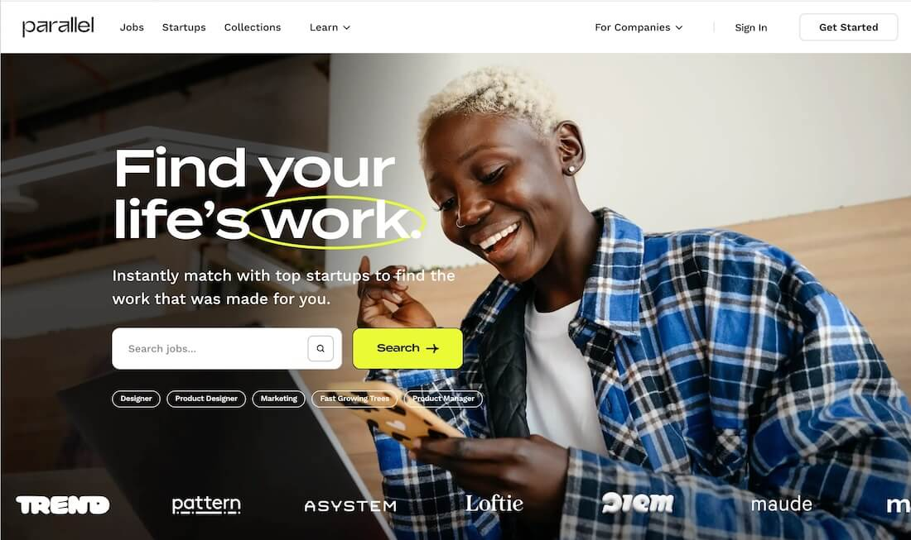

Python
Lenguaje que me interesa para análisis de datos y desarrollo de soluciones.
Estudiante de 6to ciclo de Ingeniería de Tecnologías de Información y Sistemas

Soy estudiante de 6to ciclo de Ingeniería de Tecnologías de Información y Sistemas con interés en el análisis de datos y el desarrollo web. Me motiva aprender constantemente, fortalecer mis habilidades técnicas y participar en proyectos que aporten valor mediante soluciones tecnológicas útiles.
Busco seguir creciendo profesionalmente a través de experiencias académicas y prácticas que me permitan aplicar mis conocimientos en entornos reales.
Lenguaje que me interesa para análisis de datos y desarrollo de soluciones.
Herramienta clave para consultas, organización y manejo de bases de datos.
Tecnologías base para construir páginas web funcionales y presentables.
Herramienta orientada a la visualización de datos y generación de reportes.

Desarrollo de una página web de presentación profesional utilizando HTML, CSS y JavaScript, con una estructura clara, diseño responsive y contenido enfocado en mi perfil académico.
Participación en proyectos académicos orientados al desarrollo de soluciones tecnológicas, aplicando organización, trabajo en equipo y conocimientos de programación.
Interés en crear soluciones enfocadas en resolver problemas reales mediante el uso de herramientas tecnológicas y análisis de información.
Me interesa transformar datos en información útil para apoyar la toma de decisiones.
Busco crear páginas y sistemas web funcionales, ordenados y atractivos visualmente.
Me motiva participar en proyectos que utilicen tecnología para generar impacto positivo.
Si deseas comunicarte conmigo, puedes encontrarme en los siguientes medios: